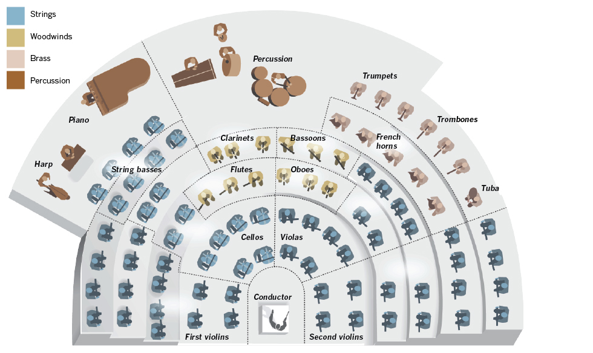

Orchestral Instruments
Let's learn about an each part of Orchestral Instruments
HOME |
STRINGS |
WOODWINDS |
BRASS |
PERCUSSION

Visit World Famous Orchestra Site


Visit World Famous Orchestra Site